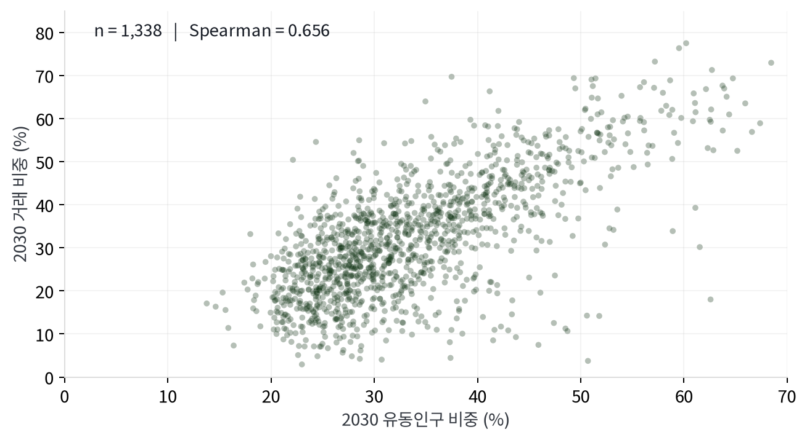
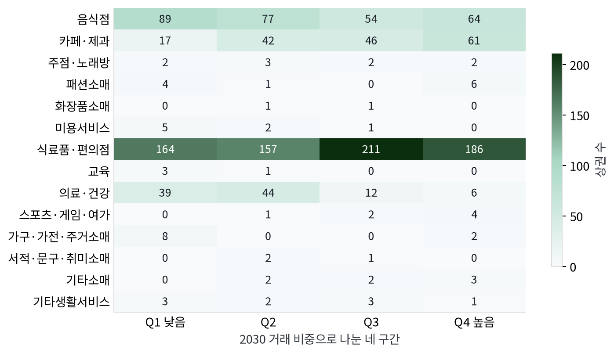
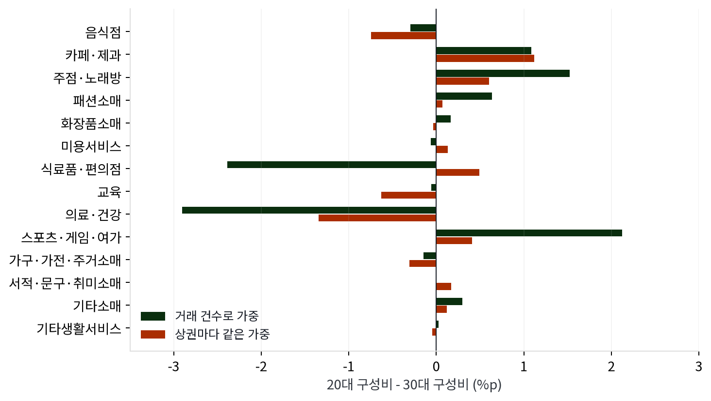
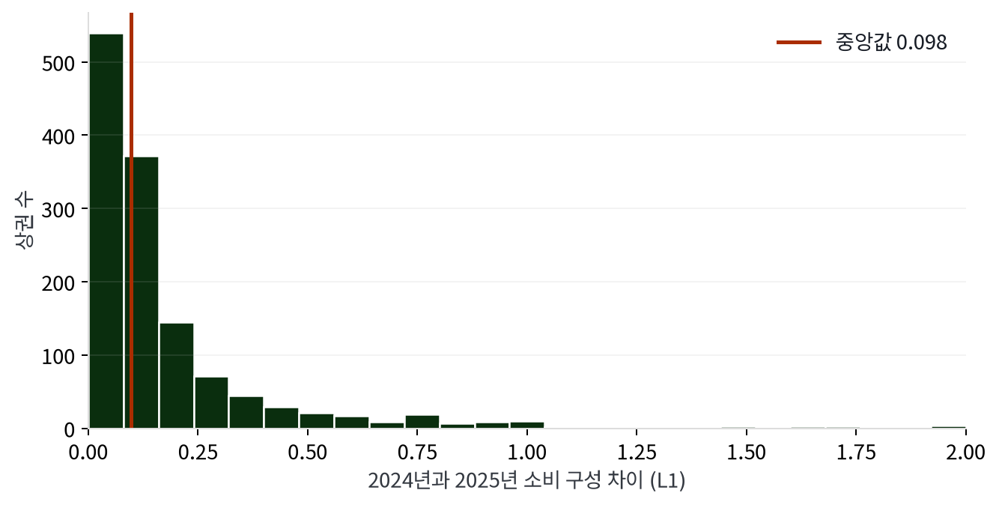
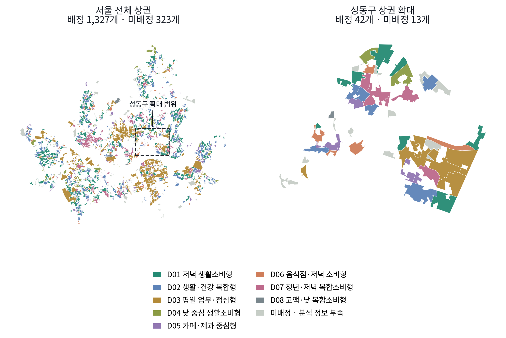

어떤 데이터를 어떻게 비교했을까?
익숙한 동네 밖의 새 방문 후보를 찾기 위해 상권의 소비 구성을 비교했습니다. 주 분석은 같은 업종의 4개 분기 매출이 모두 있고, 그런 업종이 3개 이상인 2025년 상권 1,340개입니다.
| 자료 | 단위와 쓰임 |
|---|---|
| 추정매출 172,911행 | 상권 × 업종 × 분기. 2024·2025년의 거래 건수와 금액 |
| 62개 업종 → 14개 소비군 | 관측된 2030 거래를 업종별 구성비로 요약 |
| 인구·점포·상권 경계 | 인구는 상권 × 분기에서 연간 평균. 점포는 관측 점검, 경계는 지도 연결 |
| 모델 비교 1,327개 상권 | 28개 지표가 모두 있는 동일 상권끼리 비교. 결측 13개는 별도 보존 |
- 자료 상태 확인같은 기록의 중복, 빠진 값, 자료끼리의 연결을 확인했습니다. 기록된 0은 유지하고 없는 값을 0으로 채우지 않았습니다.
- 비교 지표 만들기소비군 구성, 연령별 거래 비중, 거래당 평균 금액을 계산했습니다. 시간·주말은 전체 연령 매출금액으로 구분했습니다.
- 가설별 차이 확인H1은 두 비중의 관계, H2는 소비 1위의 다양성, H3는 연령 차이, H4는 두 해 같은 상권의 변화를 비교했습니다.
청년 유동인구 비중이 높으면 거래 비중도 높을까?
유동인구 자료가 유효한 1,338개 상권에서 두 비중의 관계를 확인했습니다.

같은 사람의 방문과 구매를 연결한 자료가 아니므로 구매 전환율이나 인과를 뜻하지 않습니다.
2030 거래 비중이 비슷해도 소비 업종은 다를까?
청년 거래 비중으로 상권을 네 구간으로 나누고 각 구간의 거래 1위 소비군을 비교했습니다.

각 구간의 청년 비중이 정확히 같지는 않습니다. 소비 1위의 종류 수가 군집 수를 뜻하지는 않습니다.
20대와 30대는 같은 방식으로 소비할까?
같은 상권 1,340개에서 연령별 소비 구성을 비교했습니다. 거래를 합친 결과와 상권별 비중의 평균을 함께 확인했습니다.

식료품·편의점은 두 가중 방식의 방향이 달랐습니다. 큰 상권의 영향이 있어 모든 상권이나 개인 취향으로 일반화하지 않습니다.
상권의 소비 구성은 다음 해에도 비슷할까?
2024·2025년 모두 조건을 만족한 1,319개 상권끼리 연결했습니다.

1위가 같아도 나머지 구성은 바뀔 수 있습니다. 관측 업종 차이와 분기 변화를 고려해 주기적인 갱신이 필요합니다.
소비의 차이를 상권 유형과 지도로 연결
소비 구성·연령·거래당 금액으로 상권 유형을 만들고, 시간·인구를 더했을 때의 구분과 안정성을 비교했습니다. 지도는 이미 저장된 K=8 추가 탐색 결과이며 EDA 관측 사실과 구분합니다.
| 구분 | 저장 결과 | 읽는 법 |
|---|---|---|
| 주 모델 | 18개 지표 · K=2 · 실루엣 0.261 | 큰 소비 특성의 구분 |
| 지도용 추가 탐색 | 28개 지표 · K=8 · 실루엣 0.130 | 유형 간 경계가 겹치는 세부 탐색 |
| 지도 배정 | 1,650개 경계 중 1,327개 배정 | 미배정 323개는 회색으로 보존 |

실루엣은 군집 분리 정도로 추천 정확도가 아닙니다. D08은 29개로 작고 경계가 불안정합니다. H5의 무작위·근거리 추천 대비 효용과 사용자 방문 고려 효과는 미검증입니다.
이 발견을 서비스에 어떻게 쓸까요?
닮은 상권을 찾는 근거에서 출발해, 매장 발견과 제휴 혜택을 연결하는 활용 제안을 확인해 보세요.
인사이트와 활용 제안 보기근거와 해석 범위
수업 제공 서울시 상권 자료와 저장된 persona_final_eda 집계·그래프, persona_kmeans_v1 군집 결과를 사용했습니다. 관측 업종 합 기준이며 개인 취향·실시간 혼잡·방문 효과를 측정하지 않았습니다.